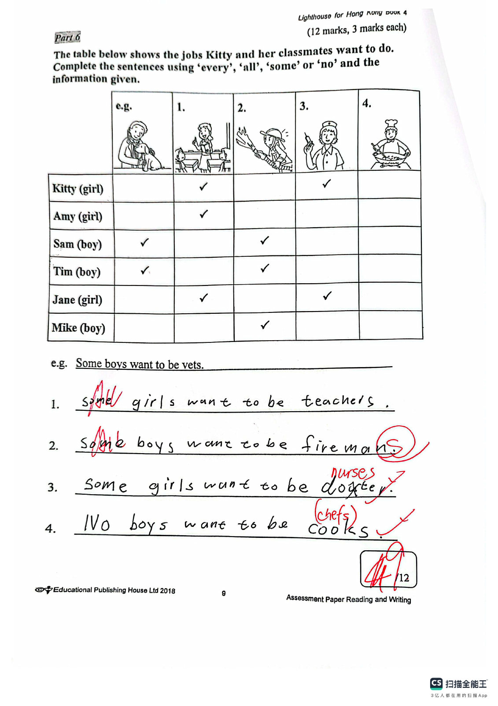
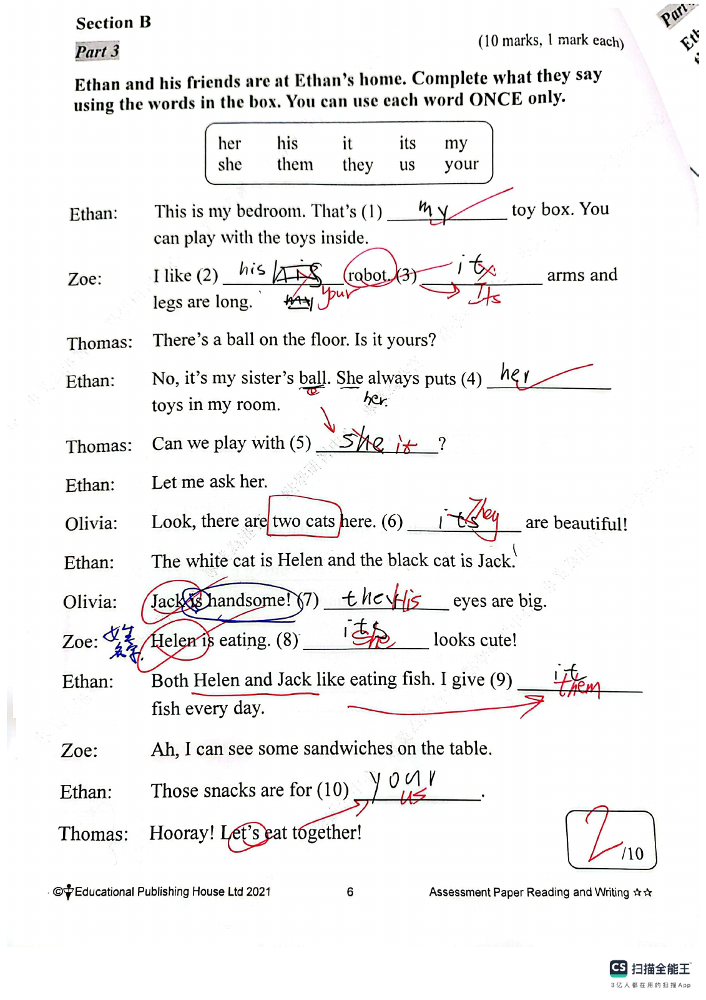

Answer: (a) kg; (b) g; (c) cm; (d) kg
已掌握
| # | 单词/词组 | 中文意思 | 例句/说明 | 已掌握 |
|---|---|---|---|---|
| noun 名词 | ||||
| 1 | owner | 主人 | The dog loves its owner. | |
| 2 | hair | 头发 | Her hair is long. | |
| 3 | minute | 分钟 | Please wait a minute. | |
| 4 | twin | 双胞胎 | My brother and I are twins. | |
| 5 | future | 未来 | I will study hard in the future. | |
| 6 | chef | 厨师 | The chef cooks dinner. | |
| 7 | pupil | 小学生 | The pupil reads a book. | |
| 8 | plane | 飞机 | We travelled to Japan by plane. | |
| verb 动词 | ||||
| 9 | feed | 喂养 | I feed my fish every day. | |
| 10 | spend | 花费 | I spend one hour reading. | |
| 11 | meet | 见面 | Let's meet at the school gate. | |
| phrase 短语 | ||||
| 12 | turn left | 左转 | Turn left at the corner. | |
| 13 | take off | 脱下 | Please take off your shoes. | |
| 14 | wait a minute | 等一下 | Wait a minute, please. | |
| 15 | clean the dishes | 洗餐具 | We clean the dishes after dinner. | |
| adjective 形容词 | ||||
| 16 | friendly | 友好的 | The teacher is friendly. | |
| 17 | tidy | 爱干净的 | My brother is tidy and always puts his toys away. | |
| 18 | helpful | 有帮助的 | This map is helpful. | |
| 19 | same | 相同的 | We are in the same class. | |
| 20 | favourite | 特别喜欢的 | My favourite sport is basketball. | |
| # | 单词/词组 | 中文意思 | 例句/说明 | 已掌握 |
|---|---|---|---|---|
| adjective 形容词 | ||||
| 1 | shady | 阴凉的 | We sit under a shady tree. | |
| 2 | organic | 有机的 | My uncle grows organic vegetables. | |
| 3 | hard-working | 勤奋的，努力工作的 | They are hard-working. | |
| noun 名词 | ||||
| 4 | word | 单词 | Please write fifty words. | |
| 5 | ham | 火腿 | Where does ham come from? | |
| 6 | photograph | 照片 | This photograph is beautiful. | |
| 7 | postman | 邮递员 | The postman brings letters. | |
| 8 | housewife | 家庭主妇 | The housewife is cooking. | |
| 9 | reindeer | 驯鹿 | The reindeer is walking in the snow. | |
| 10 | adventure | 奇遇 | The story is a fun adventure. | |
| 11 | flat | 公寓 | We live in a flat. | |
| 12 | timetable | 时间表 | The timetable shows my classes. | |
| 13 | blanks | 空白 | Fill in the blanks with the correct words. | |
| 14 | Putonghua | 普通话 | Li Ying is good at Putonghua. | |
| 15 | supermarket | 超级市场 | Jerry is at the supermarket with Aunt June. | |
| 16 | bush | 灌木丛 | The kitten is hiding behind a bush. | |
| noun phrase 名词短语 | ||||
| 17 | present continuous tense | 现在进行时 | The sentence "I am reading" is in the present continuous tense. | |
| 18 | cup of hot chocolate | 一杯热巧克力 | I would like a cup of hot chocolate. | |
| 19 | animal shelter | 动物收容所 | It is Claire's birthday. Her mother takes her to an animal shelter. | |
| 20 | total price | 总价 | The total price of three apples at two dollars each is six dollars. | |
| verb 动词 | ||||
| 21 | pack | 打包 | Eric packs the basket but there is a hole in the bottom! | |
| 22 | arrive | 到达 | I arrive at school on time. | |
| 23 | locate | 定位 | We can locate the place on the map. | |
| 24 | dry | 弄干 | I dry my dog with a towel after his bath. | |
| verb phrase 动词短语 | ||||
| 25 | make paper toys | 做纸玩具 | Can you make paper toys? | |
| 26 | playing computer games | 玩电脑游戏 | He likes playing computer games. | |
| 27 | paint pictures | 画画 | I like to paint pictures after school. | |
| 28 | eat moon cakes | 吃月饼 | We eat moon cakes at the Mid-Autumn Festival. | |
| 29 | have a birthday party | 举办生日派对 | I want to have a birthday party at home. | |
| noun/verb 名词/动词 | ||||
| 30 | survey | 调查 | We do a survey in class. | |
| # | 单词/词组 | 中文意思 | 例句/说明 | 已掌握 |
|---|---|---|---|---|
| time/date 时间日期 | ||||
| 1 | January | 一月 | January is the first month. | |
| 2 | April | 四月 | April is the fourth month. | |
| 3 | September | 九月 | September is the ninth month. | |
| 4 | December | 十二月 | December is the twelfth month. | |
| 5 | Sunday | 星期日 | Sunday is a weekend day. | |
| directions 方向 | ||||
| 6 | west | 西 | The sun sets in the west. | |
| numbers 数字 | ||||
| 7 | two | 2 | Two is 2. | |
| 8 | four | 4 | Four is 4. | |
| 9 | sixteen | 16 | Sixteen is 16. | |
| 10 | nineteen | 19 | Nineteen is 19. | |
| ordinal numbers 序数 | ||||
| 11 | third | 第三 | This is the third shape. | |
| solid shape 立体图形 | ||||
| 12 | hexagonal pyramid | 六棱锥 | A hexagonal pyramid has one hexagonal base and six triangular side faces. | |
| plane shape 平面图形 | ||||
| 13 | trapezium | 梯形 | A trapezium has exactly one pair of parallel sides. | |
| 14 | parallelogram | 平行四边形 | A parallelogram has two pairs of parallel sides. | |
| geometry 几何 | ||||
| 15 | adjacent side | 邻边 | These are adjacent sides. | |
| # | 单词/词组 | 中文意思 | 例句/说明 | 已掌握 |
|---|---|---|---|---|
| operations 运算 | ||||
| 1 | addition | 加法 | Addition means putting numbers together. | |
| geometry 几何 | ||||
| 2 | curve | 曲线 | Draw a curve. | |
| 3 | parallel to each other | 相互平行 | The two lines are parallel to each other. | |
| question word 题目词 | ||||
| 4 | estimate | 估计 | Estimate the answer first. | |
| answer 答案 | ||||
| 5 | result | 结果 | Check the result after you calculate. | |
| 6 | correct | 正确的 | Choose the correct answer. | |
| place value 位值 | ||||
| 7 | tens | 十位 | The digit is in the tens place. | |
| 8 | 5-digit number | 五位数 | 12,345 is a 5-digit number. | |
| comparison 比较 | ||||
| 9 | fewer | 更少 | There are fewer apples in this box. | |
| 10 | most | 最多的 | Which group has the most? | |
| time/date 时间日期 | ||||
| 11 | hour hand | 时针 | At three o'clock, the hour hand points to 3. | |
| 12 | minute hand | 分针 | At three o'clock, the minute hand points to 12. | |
| position 位置 | ||||
| 13 | above | 上面 | The clock is above the board. | |
| operations calculation 运算 | ||||
| 14 | subtract A from B | B-A | "Subtract A from B" means B - A. | |
| 15 | divisor | 除数 | The divisor divides the dividend. | |
| 16 | checking | 验算 | Checking by addition shows that 9 - 4 = 5 is correct: 5 + 4 = 9. | |
| teacher math vocabulary 老师数学词汇 | ||||
| 17 | finish | 完成 | Please finish the calculation. | |
| currency money 货币 | ||||
| 18 | dollar | 元 | One dollar has 100 cents. | |
| 19 | coin | 硬币 | The coin is round. | |
| 20 | change | 零钱 | Count the change after paying. | |
| measurement 测量 | ||||
| 21 | ruler | 尺子 | Use a ruler to measure the length of the line segment. | |
| 22 | centimetre | 厘米 | A centimetre is a small unit of length. | |
| 23 | length | 长度 | Find the length of the line. | |
| 24 | gram | 克 | One gram is one thousandth of a kilogram. | |
| 25 | weight | 重量 | The weight of this bag is 2 kg. | |
| 26 | pointer | 指针 | The pointer on the scale shows 2 kg. | |
| position order 位置和顺序 | ||||
| 27 | following | 下面的 | Answer the following questions. | |
| data charts 统计图 | ||||
| 28 | pictogram | 象形图 | Read the pictogram. | |
| plane shape 平面图形 | ||||
| 29 | lower base | 下底 | The lower base of this trapezium is 7 cm long. | |
| 30 | right-angled trapezium | 直角梯形 | A right-angled trapezium has two right angles. | |

